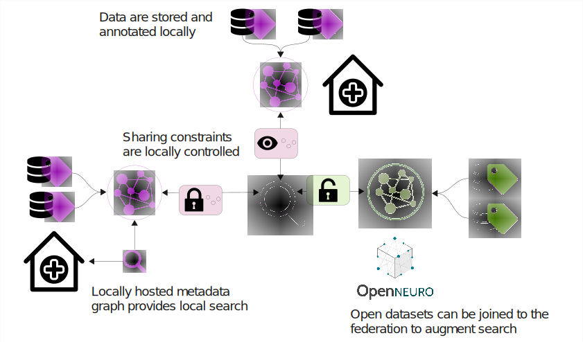
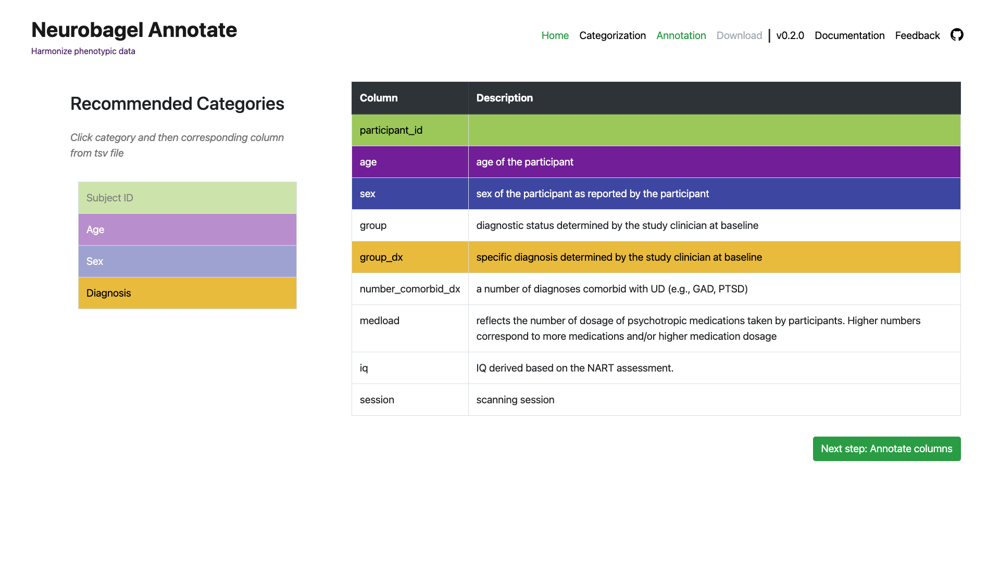
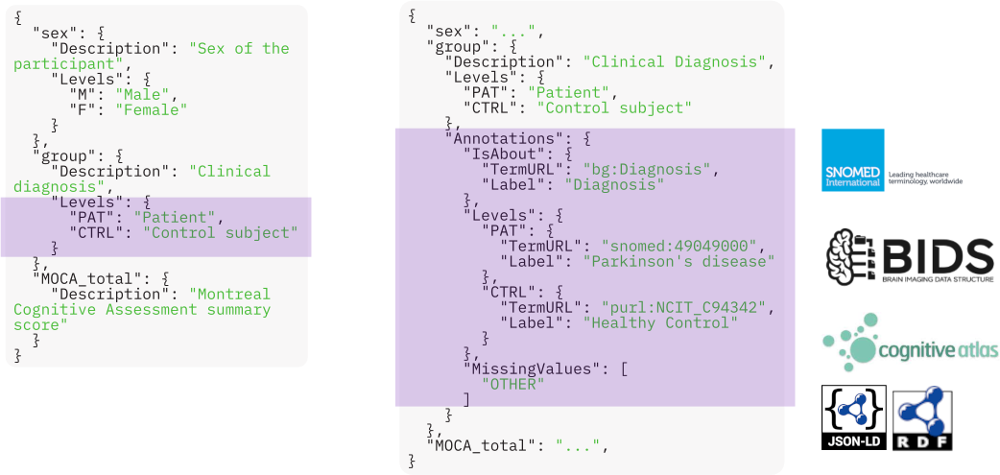
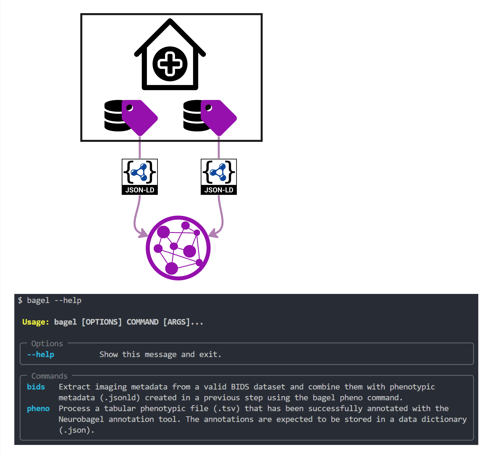
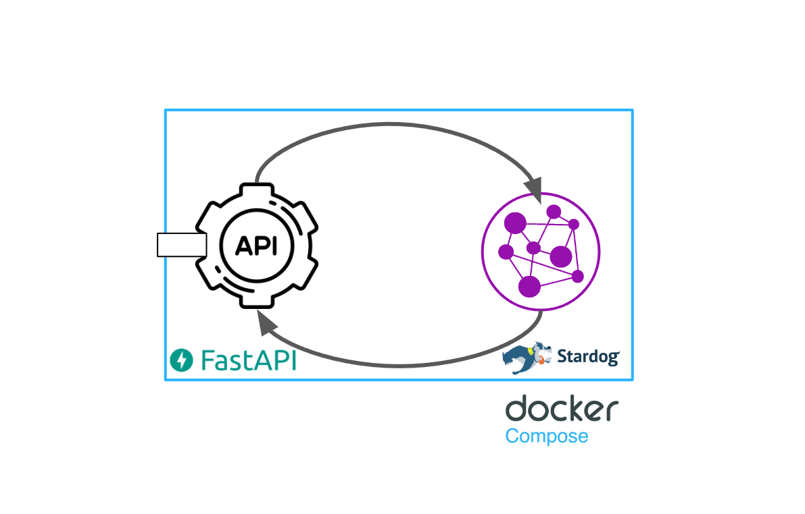

An ecosystem for distributed dataset harmonization and search.
Neurobagel allows you to connect a local neuroimaging dataset with others in a decentralized framework using linked data principles.
Federated data integration, local control
Our aim is to allow researchers and data owners to harmonize and integrate their datasets without uploading them to a central database. Neurobagel provides reusable data schemas and intuitive tools for local data annotation, enabling participant-level cohort search across harmonized datasets.

-
Your data, your rules
- Dataset files and access control always remain locally with data owners. This avoids the usual vendor lock-in of centralized databases.
-
Open standards for data description
- Subject data are annotated using widely adopted controlled vocabularies and are represented using semantic web standards. This allows data to be easily integrated with other resources.
-
Ease of use
- Web interfaces as well as a modular, containerized software stack allow datasets to be annotated and queried with as little as no coding experience while remaining highly configurable.
-
Participant-level search
- Annotated data supports queries of phenotypic and imaging properties at the individual subject rather than the dataset level.
Annotate your tabular data
Describe phenotypic data using a harmonized data model completely in the browser.

Work with standardized terminologies
Reap the benefits of curated vocabularies (e.g., BIDS, SNOMED CT, and NIDM) and linked data, without the implementation expertise.

Create reproducible, shareable data representations
Once a dataset is annotated, harmonized subject data can be updated and regenerated at any time. These subject-level annotations are added to knowledge graphs, while your local data files remain the only source of truth about the dataset.

Easy local deployments
Want to host a local knowledge graph store at your institute? docker compose up, and you're in business.

Search for subjects across datasets
Easily define your own cross-dataset cohorts based on clinical-demographic and imaging parameters.

Our team
Neurobagel is a collaborative effort based in the ORIGAMI Lab at the Montreal Neurological Institute in collaboration with the Douglas Research Centre. Visit this page to learn more about the project team.